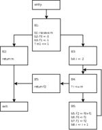

Analiza fluxului de date oferă informație globală despre modul în care o procedură sau, în general, un segment de program manipulează datele.
Un exemplu de optimizare ce se poate realiza cu o analiză a fluxului de date este propagarea constantelor:
Pentru ca un analizor să poată emite astfel de judecăți asupra programului analizat trebuie să mențină pentru fiecare punct de interes din programul analizat (de obicei pentru fiecare intrare sau ieșire dintr-un basic block) o structură de date cu informații despre cum sunt manipulate datele. În cele ce urmează vom prezenta modelul matematic folosit cel mai des pentru reprezentarea acestei informații precum și un algoritm iterativ de analiză a fluxului de date.
Analiza fluxului de date se realizează prin executarea de operații asupra unei structuri algebrice denumită latice. Elementele laticei reprezintă proprietăti abstracte ale variabilelor, expresiilor sau altor componente din program. Fiecărei portiuni de interes din program (instrucțiune, basic block sau procedură) i se asociază un element de latice care memorează proprietățile urmărite de analiză pentru respectiva porțiune.
Aceste proprietăți se referă la toate execuțiile posibile în cadrul unei proceduri (dacă vorbim de analiza intra-procedurală), fără a ține seama de datele de intrare și de drumurile în graful fluxului de control al procedurii. Mai precis, cele mai multe metode de analiză de date nu țin cont dacă o condiție este îndeplinită sau nu (cu alte cuvinte care din ramuri este executată) sau de câte ori se execută o buclă. Totuși, informațiile cu care operează analiza vor fi conservative (de exemplu, se poate presupune ca ambele ramuri ale unei conditii pot fi executate) pentru ca să nu se tragă concluzii greșite asupra programului (care ar putea duce la efectuarea unor transformări/optimizări care să facă programul incorect).
Pentru a modela efectul pe care îl are fiecare componentă a programului asupra elementelor de latice, se defineste o așa numită funcție de flux. Se asociază câte o funcție de flux fiecărei porțiuni de interes (instrucțiune, basic block sau procedură). Spre exemplu, o funcție de flux asociată unei instructiuni primește ca parametru un element de latice și întoarce elementul de latice transformat în urma execuției instrucțiunii respective. O funcție de flux asociată unui bloc de bază are ca intrare tot un element de latice și întoarce elementul de latice așa cum este el transformat în urma execuției blocului respectiv. De obicei, funcția de flux asociată unui basic block este rezultată din compunerea funcțiilor de flux asociate instrucțiunilor din bloc.
În general, o latice L este formată dintr-o mulțime de valori și două operații pe care le vom nota ∩ (meet) și ∪ (join) care au următoarele proprietăți:
distributive - ∀x ∈ L, ∀y ∈ L, ∀z ∈ L, (x ∩ y) ∪ z = (x ∪ z) ∩ (y ∪ z) și (x ∪ y) ∩ z = (x ∩ z) ∪ (y ∩ z)Următorul tip de latice este foarte des folosit:
Folosim notatia BVn pentru a desemna o latice de vectori de biți de lungime n. Figura de mai jos contine o prezentare grafica a laticei BV3
Relația de incluziune(notată cu ⊆) este o relație de ordine parțială pe elementele laticei. Aceasta poate fi definită folosind operatia ∩ astfel: x ⊆ y ⇔ x ∩ y = x. Se poate da și o definiție duală folosind operatia ∪. Următoarele proprietăți ale relației ⊆ se demonstrează cu ușurință pe baza proprietăților operațiilor ∪ și ∩:
În mod corespunzator se definesc și relatiile ⊂, ⊃, ⊇.
O funcție de flux ce mapează laticea pe ea însăși (f : L → L) este monotonă dacă ∀x ∈ L, ∀y ∈ L, x ⊆ y ⇒ f(x) ⊆ f(y). De exemplu, funcția f : BV3 → BV3 definită prin f(<x1x2x3>) = <x11x3> este monotonă.
Înălțimea unei latice este lungimea celui mai lung lanț strict crescător din latice, adică cel mai mare n astfel încât ⊥ = x1 ⊂ x2 ⊂ … ⊂ xn = T. De exemplu, înălțimea laticei BV3 din figura de mai sus este 4.
Pentru o problemă particulară de analiză a fluxului de date, o funcție de flux modelează efectul unei porțiuni de interes. Pentru a putea rezolva o problemă de analiză de flux de date impunem ca toate funcțiile de flux să fie monotone. Acest lucru este rezonabil ținând cont că scopul unei funcții de flux este să modeleze informația (despre problema de flux de date) oferită de o porțiune de program și, deci, nu ar trebui să scadă cantitatea de informație deja obținută. Monotonia este de asemenea esențială pentru a demonstra că algoritmii de analiză a fluxului de date se termină și pentru a calcula complexitatea lor.
Fiind dat un set de ecuații de flux de date, valoarea pe care vrem să o calculăm este așa-numita soluție “meet-over-all-paths” (MOP).Fie:
G = <N, E> - CFG (control flow graph)Path(B) - mulțimea tuturor căilor de la blocul entry la B cu B ∈ Np - o cale oarecare din Path(B)FB - funcția de flux reprezentând fluxul prin blocul BFp - compunerea funcțiilor de flux întâlnite pe calea pB1 = entry, …, Bn = B sunt blocurile ce constituie calea p, atunci FP = FBn o … o FB1init - valoarea din latice asociata cu blocul entry
Atunci, solutia MOP este: $MOP(B) = \sqcap_{p\in\mathbf{Path(B)}}{F_p(Init)}$, relația fiind aplicată pentru entry, B1, … , Bn, exit.
Problemele de analiză de date se clasifică după urmatoarele criterii:
Toate problemele pe care le tratăm aici sunt probleme cu atribute independente (atribuie un element al laticei fiecarui obiect de interes – de exemplu definire de variabilă, calcul de expresie etc.). Problemele relaționale au o complexitate computațională mult mai mare decât cele cu atribute independente. Similar, aproape toate problemele pe care le tratăm sunt unidirecționale (de tip înainte sau de tip înapoi). Problemele bidirecționale impun propagarea informației și înainte, și înapoi în acelasi timp și sunt mult mai complicat de formulat, înteles și rezolvat decât cele unidirecționale.
Tipuri importante probleme de analiza fluxului de date:
a = 5 // definirea #1 printf(a); // definirea #1 este utilizata aici if (b > c) a = 10; // definirea #2 return a; // ambele definiri pot fi utilizate aici
. Aceasta este o problema de tip înainte, care folosește o latice de vectori de biți în care fiecare bit corespunde unei definiri a unei variabile.
Problemele de mai sus nu sunt singurele de analiză de date, dar sunt dintre cele mai importante. Există mai multe abordări în rezolvarea problemelor de flux de date. Aici vom descrie algoritmul iterativ al lui Kildall.
În continuare vom prezenta metoda iterativă de analiză a fluxului de date, întrucât este cel mai simplu de implementat și, ca urmare, cel mai frecvent folosită. Vom avea în vedere analiza de tip înainte. Problemele de tip înapoi reprezintă o simplă adaptare a metodei.
Pentru un CFG, G = <N, E> unde entry și exit sunt blocuri în N, se dorește să se calculeze:
unde:
Init - valoarea inițială pentru informația despre fluxul de date la intrarea în procedurăFB() - transformarea asupra informației de flux de date corespunzătoare executării blocului B
În funcție de problemă, efectul combinării informației de flux de date de pe arcele care intră într-un bloc poate fi modelat de ∪ sau de ∩. Analog, valoarea lui Init poate fi ⊥ sau T. Ecuațiile pot fi exprimate doar în funcție de in(B) astfel:
$$in(B) = \left\{\begin{array}{ll} Init & \mbox{ daca } B = entry \\ \sqcap_{p\in\mathbf{pred(B)}}{F_{p}(in(p))} & \mbox{ altfel } \end{array} \right.$$
Algoritmul AnalizaIterativa foloseste doar informații in(). Strategia acestuia este aceea de a aplica în mod iterativ ecuațiile date mai sus și de a menține o listă de blocuri pentru care valorile in() s-au schimbat la ultima iterație, până când se golește lista.
Inițializări:
entry, deoarece informația acestuia nu se schimbă niciodată.totalEffect este inițializat cu T pentru că am considerat că ∩ modelează efectul combinării informației de flux de date de pe arcele care intră într-un nod.procedure AnalizaIterativa(N, entry, F, Init, in) N: in set of Node entry: in Node F: in (Node x L) -> L Init: in L in: out Node -> L begin B, P: Node nodeList: set of Node totalEffect: L in(entry) = Init nodeList = N - {entry} for each B ∈ N do in(B) = T done repeat B = an element from nodeList nodeList = nodeList - {B} totalEffect = T for each p ∈ pred(B) do totalEffect = totalEffect ∩ Fp(in(p)) done if (in(B) != totalEffect) then in(B) = totalEffect nodeList = nodeList ∪ succ(B) fi until nodeList = ∅ end
Eficiența computațională a algoritmului depinde de câțiva factori:
FB
Primii doi factori depind de problemă, în timp ce felul în care este administrată lista este independent de problemă.
Cea mai simplă implementare este aceea în care se folosește o stivă sau o coadă, fără a ține seama de relațiile dintre blocuri (arcele din CFG). Pe de altă parte, însă, dacă se procesează toți predecesorii unui bloc înaintea prelucrarii acestuia, atunci se va obține efect maxim asupra informației blocului de fiecare dată când este întâlnit. Pot fi astfel de rezultate dacă, de exemplu, lista va fi completată în ordine inversa printr-o parcurgere postordine și se va opera apoi asupra ei precum asupra unei structuri de date de tip coadă. În acest context, dacă A este numarul maxim de arce înapoi pe oricare drum aciclic din CFG, atunci A+2 iteratii prin bucla repeat vor fi suficiente pentru terminarea algoritmului. În practică este A ≤ 3 și, cel mai frecvent, A = 1.
| Pseudocod | CFG |
|---|---|
1 receive m 2 f0 <- 0 3 f1 <- 1 4 if m <= 1 goto L3 5 i <- 2 6 L1: if i <= m goto L2 7 return f2 8 L2: f2 <- f0+f1 9 f0 <- f1 10 f1 <- f2 11 i <- i+1 12 goto L1 13 L3: return m |  |
In tabelul de mai jos sunt prezentate corespondența dintre pozițiile biților în cadrul vectorilor, definirea variabilei și blocul în care aceasta are loc.
| Poziția bitului | Definirea | Basic block |
|---|---|---|
| 1 | m din instrucțiunea 1 | B1 |
| 2 | f0 din instrucțiunea 2 | B1 |
| 3 | f1 din instrucțiunea 3 | B1 |
| 4 | i din instrucțiunea 5 | B3 |
| 5 | f2 din instrucțiunea 8 | B6 |
| 6 | f0 din instrucțiunea 9 | B6 |
| 7 | f1 din instrucțiunea 10 | B6 |
| 8 | i din instrucțiunea 11 | B6 |
Funcțiile de flux pentru fiecare bloc sunt prezentate în tabelul de mai jos (id este funcția identitate). La aceste funcții se ajunge relativ ușor folosind seturi kill/gen și explicația procedeului constituie primul exercițiu din acest laborator.
| Funcția asociată unui bloc | Valoarea funcției |
|---|---|
| Fentry | id |
| FB1(<x1 x2 x3 x4 x5 x6 x7 x8>) | <1 1 1 x4 x5 0 0 x8> |
| FB2 | id |
| FB3(<x1 x2 x3 x4 x5 x6 x7 x8>) | <x1 x2 x3 1 x5 x6 x7 0> |
| FB4 | id |
| FB5 | id |
| FB6(<x1 x2 x3 x4 x5 x6 x7 x8>) | <x1 0 0 0 1 1 1 1> |
Valoarea inițială pentru in(B) pentru toate blocurile este <00000000>. Operatorul de combinare a efectelor de pe arcele care intră într-un bloc este U (în acest caz operatorul SAU aplicat pe vectori de biți).
| Pas | Operații | Lista de blocuri rezultată |
|---|---|---|
| 1 | Inițializare | {B1,B2,B3,B4,B5,B6,exit} |
| 2 | La intrarea în bucla repeat, valoarea inițiala a lui B este B1.Singurul predecesor al lui B1 este p = entry și rezultatul calculării lui totalEffect este <00000000>, neschimbat față de valoarea inițială a lui in(B1), deci succesorii lui B1 nu sunt adăugați în listă. | {B2,B3,B4,B5,B6,exit} → {B2,B3,B4,B5,B6,exit} |
| 3 | Se ia B = B2. Singurul predecesor al lui B2 este p = B1 și rezultatul calculării lui totalEffect este <11100000>, care devine noua valoare a lui in(B2), deci în lista de lucru se adaugă prin reuniune lista succesorilor lui B2 - {exit}. | {B3,B4,B5,B6,exit} → {B3,B4,B5,B6,exit} |
| 4 | Se ia B = B3. B3 are un singur predecesor, și anume B1, iar rezultatul calculării lui totalEffect este <11100000>, care devine noua valoare a lui in(B3). În lista de lucru se adaugă prin reuniune succesorii lui B3. | {B4,B5,B6,exit} → {B4,B5,B6,exit} |
| 5 | Se ia B = B4. B4 are doi predecesori, B3 si B6. B3 contribuie cu valoarea <11110000>, B6 contribuie cu <00001111> și totalEffect va fi <11111111>, altul decât valoarea anterioară a lui in(B4). În lista de lucru se adaugă succesorii lui B4, B5 și B6 care sunt deja în lista și aceasta rămâne nemodificată. | {B5,B6,exit} → {B5,B6,exit} |
| 6 | Se continuă cu B = B5. B5 are un singur predecesor, anume B4 care contribuie cu valoarea <11111111> la calcularea lui totalEffect, valoare diferită de vechiul in(B5), deci unicul succesor, exit, se adaugă în listă. | {B6,exit} → {B6,exit} |
| 7 | Urmează B = B6. B4, singurul predecesor al lui B6, contribuie cu valoarea <11111111> la calcularea lui totalEffect. in(B6) este modificat și succesorii lui B6 se adaugă la sfârșitul listei. | {exit} → {exit, B4} |
| 8 | Apoi B = exit. Predecesorii lui, B2 si B5 fac ca in(exit) sa devina <1111111>. Acesta nu mai are succesori. | {B4} → {B4} |
| 9 | Apoi se ia din nou B = B4. În acest moment in(B4) = <11111111>. B4 are doi predecesori, B3 si B6. Efectul lui B3 este <11110000> iar al lui B6 este <10001111>, deoarece, între timp, in(B6) a devenit <11111111>. TotalEffect se calculează prin SAU pe biți și rămâne <11111111>, deci in(B4) nu s-a modificat în acestă iterație și nu se va mai adăuga nici un nod în listă. Lista de lucru devine vidă si algoritmul se termină. | {} → {} |
Algoritmul prezentat aici se poate modifica și folosi foarte simplu și pentru o problemă de tip înapoi, bine formulată. Trebuie ales între a asocia informația de flux de date pentru o astfel de problemă fie cu punctul de intrare, fie cu cel de ieșire al fiecărui bloc. Pentru a folosi dualitatea dintre cele doua tipuri problemele, se optează pentru a doua variantă.
Ca și în problemele de tip înainte, există graful G = <N, E> cu blocurile entry și exit în N și se dorește să se calculeze out(B) ∈ L ∀B ∈ N, unde out(B) reprezintă informația de flux de date la ieșirea din B, exprimată astfel de ecuațiile de flux de date:
Semnificațiile notațiilor rămân aceleași ca și la problemele de tip înainte. De asemenea, ecuațiile pot fi exprimate doar în funcție de out(B), la fel de ușor. În aceste conditii, algoritmul iterativ pentru probleme de tip înapoi este identic cu cel pentru probleme de tip înainte prezentat mai sus, dacă se fac înlocuirile:
out() devine in()exit devine entrysucc() devine pred()Propagarea constantelor este utilă pentru detectarea variabilelor cu valori constante în anumite puncte din program. Aceste variabile pot fi înlocuite și pot duce la formarea unor operații ale căror operazi sunt constanți. De aceea, este folosită împreună cu împachetarea constantelor (constant folding).
Următorul exemplu (preluat de pe Wikipedia) este utilizat pentru evidențierea modului de funcționare ale acestor două analize:
| Înainte de optimiazări | După o aplicare a optimizărilor | După a doua aplicare a optimizărilor |
|---|---|---|
int a = 30; int b = 9 - a / 5; int c; c = b * 4; if (c > 10) { c = c - 10; } return c * (60 / a); | int a = 30; int b = 3; int c; c = b * 4; if (c > 10) { c = c - 10; } return c * 2; | int a = 30; int b = 3; int c; c = 12; if (12 > 10) { c = 2; } return c * 2; |
Efectul celor două analize se termină aici. Dacă la “optimization spaghetti”-ul obținut se mai adaugă eliminarea codului mort și detecția faptului că if-ul întotdeuna merge pe calea true, se ajunge (eventual în mai mulți pași) la:
return 4;
Așadar, analizele de propagare și împachetare a constatelor sunt utile, mai ales aplicate împreună cu alte optimizări. Deși se pot implementa aceste două analize folosind reaching definitions și simularea evaluării expresiilor constante în mod iterativ, se propune să se proiecteze un algoritm de tip Kildall care sa le facă pe amândouă în același timp fără a folosi alte informații.
Pentru asta se definește laticea în următorul mod: pentru fiecare instrucțiune I se definesc seturile in(I) și out(I) care conțin valori pentru toate variabilele vizibile.
O variabilă poate avea una din următoarele valori:
Analiza se va face la nivel de instrucțiune și va fi de tip înainte (se poate adapta analiza la nivel de bloc). Funcția de flux pentru o instrucțiune ce nu este definită va fi funcția identitate: out(I) = in(I). Pentru o definire de forma v1 = v2 op v3, funcția de flux este descrisă de urmatoarele relații:
pentru i != 1 out(I, vi) = in(I, vi)
dacă in(I, v2) și in(I, v3) sunt ambele constante atunci
out(I, v1) = in(I, v2) op in(I, v3)
altfel dacă unul din in(I, v2) sau in(I, v3) este ⊥ atunci
out(I, v1) = ⊥
altfel
out(I, v1) = T
Următorul pas este să se stabilească cum se transferă informația de la o instrucțiune la alta prin CFG (operatorul meet). Cazul instrucțiunilor cu un singur predecesor este trivial: in(I) = out(P). Când există mai mulți predecesori se ține seama de următoarele relații ce descriu operatorul $\sqcap$ (meet). Relațiile sunt date pentru doi operanzi, dar sunt ușor extensibile la mai mulți (în caz că există mai mult de doi predecesori):
De menționat că any, după cum îi spune și numele, poate fi oricare din valori (inclusiv T și ⊥). Pentru a avea algoritmul specificat complet, mai trebuie stabilit cu ce sunt inițializate valorile din latice la începutul algoritmului: in(I, vi) = T, având semnificația “la inceput toate variabilele sunt posibil constante”.
Există o gamă largă de modalități de rezolvare a problemei analizei de date – de la executarea abstractă a unei proceduri care ar putea determina, de exemplu, că aceasta calculează funcția factorial, până la abordări mai simple, ca cea descrisă aici. În toate cazurile, însă, trebuie avută în vedere corectitudinea informației date de analiza fluxului de date, astfel că aceasta să nu reprezinte în mod greșit modul în care procedura analizată acționează asupra fluxului de date. Trebuie avut grijă să se garanteze că transformarile de cod care se bazează pe analiza de date nu iau decizii incorecte din cauza unor greșeli în proiectarea ecuațiilor de flux de date. Astfel, soluțiile acestor ecuații sunt, dacă nu o reprezentare exactă a modului în care procedura își manipulează datele, atunci, cel puțin, o aproximare conservativă a acesteia.
La final, va exista un exercițiu individual, de implementare.
Explicati cum s-a ajuns la funcțiile de flux pentru fiecare basic block în analiza vizibilității definirilor din textul laboratorului. Hint: folositi seturi kill/gen
Adaptați algoritmul Kildall pentru a calcula folosirile expuse (exposed uses). Urmăriți pașii de mai jos:
meet sau cum se transmite informația prin CFG.Aceleași cerințe ca la problema anterioară, dar pentru analiza propagarii copierilor.
Pentru CFG-ul din figură calculați :
“Dead Code Elimination” este o optimizare prin care se elimină instrucțiunile al căror rezultat nu influențeaza rezultatul final al programului. Analiza fluxului de date poate oferi informații utile pentru detectarea acestor instrucțiuni. În LLVM sunt implementate mai multe pass-uri ce pot elimina astfel de instrucțiuni, de ex: -die, -dse, -dce sau -adce.
clang -O0 -emit-llvm test.c -c -o test.bc opt -p -mem2reg -dce < test.bc > /dev/null opt -p -mem2reg -adce < test.bc > /dev/null
DCE.cpp, ADCE.cpp) pentru a observa diferențele. Găsiți sursele în subdirectorul ~/llvm-3.6.2/src/lib/Transforms/Scalar din locația în care ați instalat llvm.DCE.cpp astfel încât să afișeze lista instrucțiunilor care folosesc instrucțiunea curentă (def-use chain) la fiecare iterație prin WorkList (while (!WorkList.empty())).DCE.cpp într-un pass custom (ca în laboratorul anterior) și modificați linia cu INITIALIZE_PASS în static RegisterPass<DCE> X(“mydce”, “My DCE Pass”);.load cu calea către noul pass, ex:opt -p -mem2reg -load ../llvm-3.6.2/src/Release+Asserts/lib/DCE.so -mydce < test.bc > /dev/null
/* test.c */ #include <stdio.h> int test(int x) { int a, b, c; for (int i = 0; i < 1000000000; i++) { x = x + 1; a = x + 2; b = a - 3; c = a + b; x = x + 1; x = x + 1; x = x + 1; x = x + 1; x = x + 1; x = x + 1; x = a + b; x = a + b; x = a + b; x = a + b; x = a + b; x = a + b; } return 0; } int main() { int a = 1, b = 2; test(1); return 0; }
{kind=link}
{kind=link}
{kind=link}